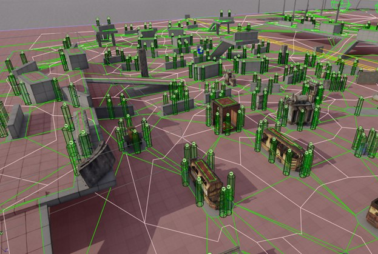
Cover lets you build interesting tactical behaviour for NPCs
In game worlds, firefights, NPC interactions and tactical maneuvers all create the need to find defensive positions, or cover points. In this article I'll look at one aspect of that mechanic — building such a system from an analysis of the surroundings, so that players and AI can fight effectively and spectacularly across different scenarios and make the experience feel more dynamic. We'll look at the specifics that shape the generation algorithm and its implementation in the 4A Engine.
A cover system lets you build interesting NPC behaviour, giving them the ability to take cover behind various objects on the map. This substantially raises the level of realism and opens the door to tactical elements like advancing, defending, flanking and so on.
Usually a cover system is made up of two modules: creating the cover points and finding them. In most modern games the creation step happens at level-design time (either by a human in UE4/Unity, or automatically as in CryEngine, or in dedicated modules as in ArenaEngine (GW2) — a heavily modified UE3), while finding cover happens in real time during play. When placing cover points, the designer relies on their own sense of how static objects and the surrounding geometry might be used, which adds a certain amount of creativity to the process.
Upsides of the manual approach
It works well for small areas like a room, a floor or a building, but having to place everything by hand across large spaces leads both to positioning mistakes and to plain fatigue from repetitive work. It gets worse whenever the geometry or the object layout on the level changes. But don't think a static cover system is bad or outdated — on the contrary, it lets designers lock in particular interesting solutions, or steer the player toward staged story scenes, because a game is theatre for a single spectator — the player.
Procedural generation
Writing an algorithm to generate a cover system can look hard at first glance, if all you see is the work of an experienced level or AI designer, because they weigh dozens and hundreds of parameters of the level and what's on it. But if you break their actions down into a sequence of simpler steps, the task becomes much less daunting. I use screenshots from the 4A Engine editor for the examples, but the algorithm itself can be implemented for any engine, be it Unity or Unreal Engine 4/5, because the principles are the same and only the technical implementation differs.
Designing the cover system
The cover system can be split into several parts:
- Generating cover
- Storing the results
- Using the cover
Generating and using the data are tightly coupled, so the way cover is used precisely determines the conditions under which it can be generated. Since this article doesn't aim to create and update cover at runtime, we can set performance questions aside for now — but it's important to keep in mind that each of these tasks needs an optimized approach.
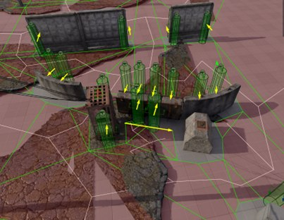
The designer needs to place cover around some object
As a starting point it's worth looking at the work of a level designer placing cover on a level. Typically they analyze the edges of objects and their position relative to others, the visibility from firing positions, then estimate which NPC actions are possible at a given point (firing around a corner, blind fire), and finally assess how well the point is protected by environmental elements and static objects. A simple example: the designer needs to place cover around some object.
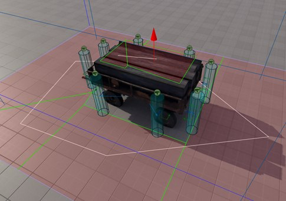
Cover sits along the edge of the navigation map, perpendicular to the object's faces
The designer usually places cover by walking around the object clockwise (or counter-clockwise), paying attention to corners and protruding parts and gauging whether a shot is possible from each point. Notice that the cover sits along the edge of the navigation map, so an NPC can run up to it; the points are roughly perpendicular to the planes that bound the object and spaced some distance apart so they don't get in each other's way. The designer did not place cover in open areas of the map, because it makes no sense and the animations would look ridiculous. In general it doesn't matter which way we walk, clockwise or counter-clockwise — what matters is the principle of placement and evaluation.
So for our implementation we should likewise lean on the edges of the navigation map as the telltale places where cover might go. Why the edge of the map specifically, rather than a uniform sampling of the whole volume? The edge of the map forms where object volumes intersect (aabb or obb); inside a volume the algorithm would run geometry checks that are guaranteed to fail, otherwise there would be no navigation map there in the first place.
Reusing the results of the geometry checks also lets us store custom data about the cover — such as material (stone, hay, brick), height, health and so on — with fast, efficient access when needed. That way NPCs can quickly retrieve information about each cover point during play, which also reduces the number of surrounding geometry checks (raypick, eqs) and enriches the level with information useful for various kinds of spatial queries.
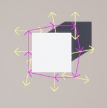
The cover's properties can store a rough openness value for each position
For instance, as in the image above, you can store a rough openness for each position. Analyzing a large number of QA fights against NPCs, I noticed that only about 20% of the environment is fully destructible — i.e. 80% of environment queries in the game will always return the same thing. This claim is debatable for a game where destructibility is a core mechanic, but in other cases you can save on it by computing the values offline and writing them into the cover's properties. This gives us yet another part of the cover system that lets an NPC roughly judge which side of the cover is best to shoot from: left, right, standing or crouched.
On top of everything said above, you can implement a system that actively updates a cover's properties in-game using this data — for example so it tracks how damaged the surrounding objects are. All of this matters for the NPC making effective, timely decisions in dynamic combat, and it raises the game AI one more notch toward realism and interaction with the environment.
Generating cover from the surroundings
Above I described edge traversal, which is a relatively cheap way to find candidate spots where an NPC could hide. Now, based on scanning the surrounding geometry at those points, we need to decide whether they're actually suitable. Let it be some percentage of coverage by which a point is considered reliable enough — say, if it blocks more than 50% of the cast raypicks.
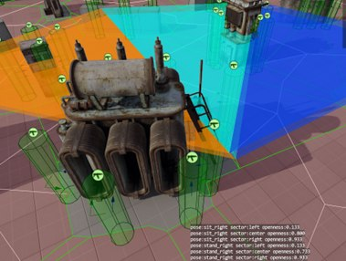
A grid of points on two axes, with raypicks cast perpendicular to the navmesh edge
For this we need to build a grid of points on two axes, evenly spaced, and at each point cast a raypick in the direction perpendicular to the navmesh edge. This solution relies on a property of the navmesh: in most cases, if a point on the map is NOT covered by navigation polygons, then it is occupied by something large enough to be an obstacle to building the navmesh.
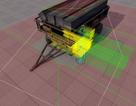
Red points — open space (discarded); green — usable at least for crouched cover
To avoid triggering unnecessary geometry checks at every point of a segment, we should first decide at all whether the point is suitable for cover. Usually it's enough to cast two raypicks to either side, perpendicular to the segment's direction, to detect that the point (red points) is in open space — those we discard right away. And two more raypicks at the mid-body height of a human/monster to detect that the point is suitable at least for crouched cover (green points).
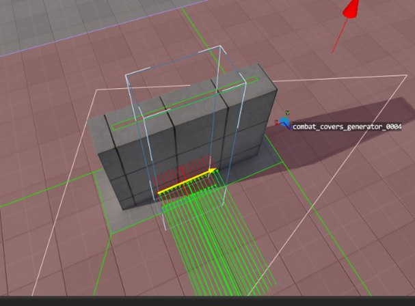
Checking points at arm's length in a T-pose — simulating leaning out of cover to fire
If both of these checks pass, we additionally check points at arm's length in a T-pose, simulating leaning out of cover to fire. We can also check there whether the raypick intersects the "ground", to cut off the edges of ledges that the NPC would otherwise have to step onto. These arm-level T-pose checks also do a good job of removing "false" cover at geometry breaks and in corners.
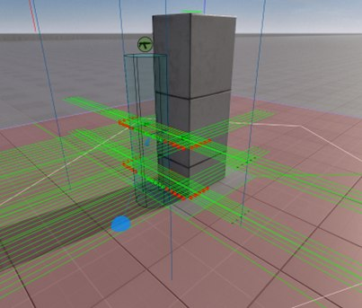
The algorithm's result does not depend on the object's rotation…
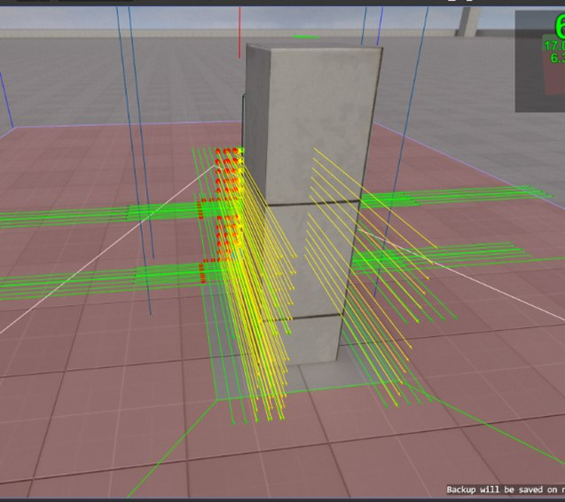
…only on whether there is a large enough protected area
After all these checks, only a very small number of candidate spots remain that need detailed geometry scanning; the cull rate at this stage is roughly 85–90% of all points across all segments. As you can see in the images below, the results of such an algorithm don't depend on the object's rotation, only on whether there's a large enough protected area.
The algorithm works for any kind of geometry, and you no longer need to place cover on the level by hand, freeing up more time for designers to be creative. This of course won't free them from fixing the algorithm's mistakes, but it makes that substantially cheaper in terms of time. You've probably also noticed that these tasks parallelize very well, letting you fully use the available PC resources. Both walking a navigation-map segment and the detailed geometry scan at cover points can be split into separate jobs.
For most games the edge-traversal strategy will be enough, or will cover the bulk of a cover system's needs, simply by virtue of how the navigation map is generated. A human adds the rest, the creative part.
Walking the map edges
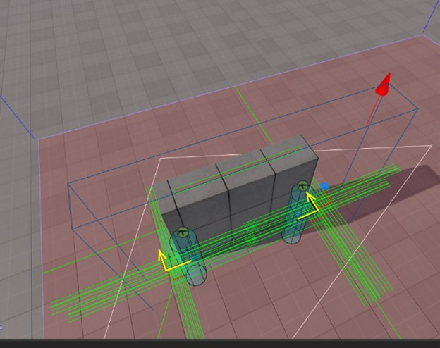
Three points on a segment and a ray perpendicular to its direction — a fast edge walk
Creating cover by walking the edges is a very simple and effective solution that you can apply in most cases. In the simplest variant you can take three points on a segment and, with a ray perpendicular to the resulting direction, check both directions for geometry at the NPC's body center and head — that's enough to place cover quickly on a level.
A more complex and expensive option is to walk every face of the navmesh, or to split the area into evenly spaced points and scan at each of them. From my experience implementing such systems in Unity it's a little more accurate than edge traversal, but far more time-consuming, while a point on the edge has a significant chance of intersecting geometry without any wasted computation.
A second advantage of the edge-traversal algorithm is that the polygon count of the navigation mesh, even on a complex object, usually doesn't exceed a few hundred, so the object can be as large as you like. Its size has no effect on the navmesh polygon count, except when the map has lots of small details — but then it's worth questioning whether building a navmesh there is even worthwhile. That's left to the conscience and experience of the level designer.
And even if you do manage to create a huge object, the navmesh polygon count will still be far smaller than the number of evenly distributed points you'd need to scan it.
Mistakes
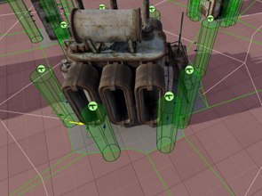
Artifacts along the edges of a segment on objects with complex shapes
The edge-traversal algorithm isn't without flaws, and in most cases that shows up as strange artifacts along the edges of a segment when objects have complex shapes. There's little you can do about them other than removing them during generation by stepping back some distance from the segment edge and forbidding generation on short segments.
Finding cover during play (cover evaluation)
So, with an array of cover points on our map at hand, we can use it for our work while (conditionally) ignoring the level geometry. What's more, if over some interval of time this array stays unchanged (in the pre-generated case that's the lifetime of the level itself), then we can use it in a distributed search for each NPC individually, according to the given logic, without overloading the game engine with extra raycasts — ideally without calling them at all and relying only on the cover-point data.
For example, we can create an algorithm (a job) that evaluates the distance from the player to each cover point within some radius and picks the nearest one; the NPC then moves (runs, flies) to the found point and can perform whatever actions are available there (shoot, lean out, throw something at the player, shout).
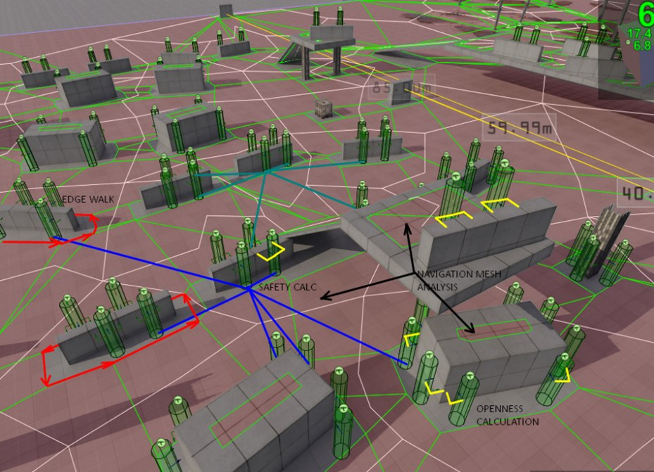
Yellow marks places you can safely attack from, blue marks the available paths
Or something more involved: create a job (a cover evaluator) that, among the available elements, picks the one that best fits the conditions. This is what finding a firing position behind a tall crate or a column might look like.
- there's no way to fire over the top of the cover
- you can fire around the sides
- the line of sight isn't blocked by other NPCs or objects
- the NPC can reach this point
To check whether an NPC can hit an enemy by leaning out of cover or crouching, you can use a raypick from a point offset relative to the cover's center, based on the information that was stored. In the screenshot the yellow lines mark the places it can safely attack from, and the blue ones the available paths.
Conclusion
The cover system uses two separate methods for generation: scanning the surroundings and walking the edges of the navigation mesh. The first method is better at finding cover suited to a specific place on the level; the second speeds up the search and lets you build the system on complex geometry in bounded time. Object scanning involves computing geometry at a given point through the engine/game subsystems, and this system can be extended with detection of ledges, balconies and corners. With a few tweaks it can run at runtime and support dynamic recomputation of these points if needed.
P.S. I hope this article was useful for understanding the principles and organization of systems like this in your own project. If anything is unclear or you have questions, don't hesitate to ask them in the comments.
P.P.S. Sorry for the heavy wording — the article was prepared for the DevGamm 2023 game conference in Gdansk, and it may well be easier to follow in English.
← All articles